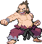
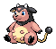
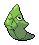
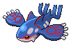
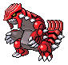

攻略大全 / 心金 / 魂银（详细图文） / 地图总览
前往狩猎地带：断崖关口 → 狩猎地带
第 31 节 · 通关后 · 途经 47号道路、断崖洞穴、埋没之塔、48号道路
断崖关口
断崖关口是和湛蓝市同在一块陆地上的小洞窟。洞里有一个服务台，还有一张宣传新开放的狩猎地带的大海报。虽然第一次到湛蓝市时就能进来，但上层区域当时被施工人员挡住了。等你治好电龙 Amphy、浅葱市的灯塔恢复之后，施工就结束了，工人也离开了。小路往西爬上47号道路的悬崖。
可遇到的宝可梦
- 冲浪
 乌波冲浪 · Lv.20-30 · 90%
乌波冲浪 · Lv.20-30 · 90% 沼王冲浪 · Lv.30-40 · 10%
沼王冲浪 · Lv.30-40 · 10%- 钓鱼
 鲤鱼王破旧钓竿 · Lv.10 · 100%
鲤鱼王破旧钓竿 · Lv.10 · 100%- 鲤鱼王好钓竿 · Lv.20 · 85%
 蚊香蝌蚪好钓竿 · Lv.20 · 15%
蚊香蝌蚪好钓竿 · Lv.20 · 15%- 鲤鱼王厉害钓竿 · Lv.40 · 70%
- 蚊香蝌蚪厉害钓竿 · Lv.40 · 30%
道具
 大珍珠水池东北边的岩石上（隐藏道具，需要攀岩、冲浪）
大珍珠水池东北边的岩石上（隐藏道具，需要攀岩、冲浪）
再见阿四
带着靛蓝色宝珠（心金）/朱红色宝珠（魂银）来这里时，会在入口内侧遇到 
↓ 下一站：47号道路
47号道路


47号道路是一条从断崖关口往西延伸的难走小路，路直接凿在悬崖上，非常险峻。上层往西北通往48号道路，下层则藏着一处叫埋藏之塔的神秘遗迹。
训练家
- 登山男 Devin₽608土龙弟弟 Lv.19土龙弟弟 Lv.19土龙弟弟 Lv.19
- 野营男 Grant₽336
 毽子花 Lv.21
毽子花 Lv.21 玛力露 Lv.21
玛力露 Lv.21 - Double Team Thom & Kae₽6000
 鸭嘴火兽 Lv.25
鸭嘴火兽 Lv.25 电击兽 Lv.25
电击兽 Lv.25 - Young Couple Duff & Eda₽2816
 刺甲贝 Lv.22
刺甲贝 Lv.22 大岩蛇 Lv.22
大岩蛇 Lv.22
可遇到的宝可梦
 拉达草丛 · Lv.31-33 · 5%
拉达草丛 · Lv.31-33 · 5% 烈雀草丛 · Lv.31 · 5%
烈雀草丛 · Lv.31 · 5% 大嘴雀草丛 · Lv.34 · 4%
大嘴雀草丛 · Lv.34 · 4% 臭臭花草丛 · Lv.32 · 5%
臭臭花草丛 · Lv.32 · 5%- Farfetch'd草丛 · Lv.35 · 早 20% · 日 20% · 夜 0%
 百变怪草丛 · Lv.31-40 · 41%
百变怪草丛 · Lv.31-40 · 41% 猫头夜鹰草丛 · Lv.35 · 早 0% · 日 0% · 夜 20%
猫头夜鹰草丛 · Lv.35 · 早 0% · 日 0% · 夜 20%
大奶罐草丛 · Lv.35 · 20%- 冲浪
- 玛瑙水母冲浪 · Lv.15-25 · 60%
 小海狮冲浪 · Lv.10-20 · 30%
小海狮冲浪 · Lv.10-20 · 30% 海星星冲浪 · Lv.15-25 · 10%
海星星冲浪 · Lv.15-25 · 10%- 钓鱼
- 鲤鱼王破旧钓竿 · Lv.10 · 85%
- 玛瑙水母破旧钓竿 · Lv.10 · 15%
- 鲤鱼王好钓竿 · Lv.20 · 40%
- 玛瑙水母好钓竿 · Lv.20 · 30%
 灯笼鱼好钓竿 · Lv.20 · 20%
灯笼鱼好钓竿 · Lv.20 · 20% 大舌贝好钓竿 · Lv.20 · 10%
大舌贝好钓竿 · Lv.20 · 10%- 灯笼鱼厉害钓竿 · Lv.40 · 40%
- 大舌贝厉害钓竿 · Lv.40 · 30%
- 毒刺水母厉害钓竿 · Lv.40 · 20%
 电灯怪厉害钓竿 · Lv.40 · 10%
电灯怪厉害钓竿 · Lv.40 · 10%- 头锤（A 组树）
 咕咕头锤 · Lv.15-16 · 50%
咕咕头锤 · Lv.15-16 · 50% 榛果球头锤 · Lv.15-16 · 30%
榛果球头锤 · Lv.15-16 · 30% 蛋蛋头锤 · Lv.15-16 · 20%
蛋蛋头锤 · Lv.15-16 · 20%- 头锤（B 组树）
- 咕咕头锤 · Lv.17-18 · 50%
 圆丝蛛仅心金头锤 · Lv.17-18 · 30%
圆丝蛛仅心金头锤 · Lv.17-18 · 30% 芭瓢虫仅魂银头锤 · Lv.17-18 · 30%
芭瓢虫仅魂银头锤 · Lv.17-18 · 30%- 蛋蛋头锤 · Lv.17-18 · 20%
- 头锤：东边瀑布顶上最左和最右的树，以及西侧小山顶上最上面的两棵树

铁甲蛹仅心金头锤 · Lv.25-28 · 50% 铁壳蛹仅魂银头锤 · Lv.25-28 · 50%
铁壳蛹仅魂银头锤 · Lv.25-28 · 50% 巴大蝶仅心金头锤 · Lv.25-28 · 30%
巴大蝶仅心金头锤 · Lv.25-28 · 30% 大针蜂仅魂银头锤 · Lv.25-28 · 30%
大针蜂仅魂银头锤 · Lv.25-28 · 30% 赫拉克罗斯头锤 · Lv.25-28 · 15%
赫拉克罗斯头锤 · Lv.25-28 · 15%- 赫拉克罗斯头锤 · Lv.27-30 · 5%
- 大量出现
- 百变怪大量出现 · Lv.35 · 40%
- 特殊
 直冲熊丰缘音乐 · Lv.31-32 · 20%
直冲熊丰缘音乐 · Lv.31-32 · 20% 咕妞妞丰缘音乐 · Lv.33-34 · 20%
咕妞妞丰缘音乐 · Lv.33-34 · 20% 大牙狸神奥音乐 · Lv.31-32 · 20%
大牙狸神奥音乐 · Lv.31-32 · 20% 泳圈鼬神奥音乐 · Lv.33-34 · 20%
泳圈鼬神奥音乐 · Lv.33-34 · 20%
道具
- 从中层过去
 活力碎片两道瀑布之间，较低的悬崖上
活力碎片两道瀑布之间，较低的悬崖上- 从下层过去
 珍珠两道瀑布之间，海滩上（隐藏道具，需要特殊能力）
珍珠两道瀑布之间，海滩上（隐藏道具，需要特殊能力） 白色玻璃哨最西北的空地（需要特殊能力）
白色玻璃哨最西北的空地（需要特殊能力） 星星沙子西南区域，较低悬崖上一块孤零零的岩石上（隐藏道具，需要特殊能力、攀岩）
星星沙子西南区域，较低悬崖上一块孤零零的岩石上（隐藏道具，需要特殊能力、攀岩） 涟漪薰香西南区域，最西边的海滩上（需要特殊能力、攀岩）
涟漪薰香西南区域，最西边的海滩上（需要特殊能力、攀岩）- 从上层过去
 后攻之尾西边瀑布上方，长满草的悬崖南端
后攻之尾西边瀑布上方，长满草的悬崖南端
中层
走出断崖关口后，你会站在道路东侧的悬崖上。往西走，在断崖洞窟入口附近和登山男 Devin 对战。附近的桥对面绕个小弯能遇到野营男 Grant，还有一个活力碎片。
断崖洞窟
断崖洞窟是一个很小的洞窟，连接这一带的三层。
可遇到的宝可梦
 超音蝠洞窟 · Lv.18 · 早 0% · 日 0% · 夜 5%
超音蝠洞窟 · Lv.18 · 早 0% · 日 0% · 夜 5% 大嘴蝠洞窟 · Lv.22 · 20%
大嘴蝠洞窟 · Lv.22 · 20%- 大嘴蝠洞窟 · Lv.20 · 早 0% · 日 0% · 夜 4%
 腕力洞窟 · Lv.19 · 10%
腕力洞窟 · Lv.19 · 10% 豪力洞窟 · Lv.22 · 4%
豪力洞窟 · Lv.22 · 4% 小拳石洞窟 · Lv.19 · 20%
小拳石洞窟 · Lv.19 · 20% 隆隆石洞窟 · Lv.20 · 早 4% · 日 4% · 夜 0%
隆隆石洞窟 · Lv.20 · 早 4% · 日 4% · 夜 0%- 大岩蛇洞窟 · Lv.20 · 10%
 大钳蟹洞窟 · Lv.20 · 10%
大钳蟹洞窟 · Lv.20 · 10% 巨钳蟹洞窟 · Lv.22 · 10%
巨钳蟹洞窟 · Lv.22 · 10%- 乌波洞窟 · Lv.18 · 早 5% · 日 5% · 夜 0%
- 沼王洞窟 · Lv.20 · 早 5% · 日 5% · 夜 0%
 梦妖洞窟 · Lv.20 · 早 0% · 日 0% · 夜 5%
梦妖洞窟 · Lv.20 · 早 0% · 日 0% · 夜 5% 大钢蛇洞窟 · Lv.23 · 2%
大钢蛇洞窟 · Lv.23 · 2%- 碎岩
- 大钳蟹碎岩 · Lv.20-26 · 80%
- 巨钳蟹碎岩 · Lv.28-31 · 20%
- 特殊
 幕下力士丰缘音乐 · Lv.19-20 · 20%
幕下力士丰缘音乐 · Lv.19-20 · 20%- 阿勃梭鲁丰缘音乐 · Lv.20, 22 · 20%
 铃铛响神奥音乐 · Lv.19-20 · 20%
铃铛响神奥音乐 · Lv.19-20 · 20% 铜镜怪神奥音乐 · Lv.20, 22 · 20%
铜镜怪神奥音乐 · Lv.20, 22 · 20%
道具
 高级球3F，东南角的墙上（隐藏道具）
高级球3F，东南角的墙上（隐藏道具）
2F
断崖洞窟里有两个梯子，一个往上，一个往下。
下层
下层出口在一小片海滩上。东边的瀑布通往道路上唯一的一片高草丛。西边的瀑布通往一块空地，那里有白色玻璃哨。用攀岩爬上西南边陡峭的悬崖，会找到另一个洞窟。
登山男的历史课
埋藏之塔入口外站着一个登山男。和他说话，可以了解里面隐藏的遗迹。
- 「哟，你好！据说这个洞后面以前有一座高耸入云的巨塔。听说那是一座很奇怪的塔，有一半嵌在悬崖里。它不只是一座伸向天空的高塔，还深深地伸进了地底！甚至有传言说它一直延伸到了海底！简单来说，这座遗迹以前把天空、大地和海洋连在了一起……现在塔的大部分都已经崩塌，只剩下入口和内部，里面能看到奇怪的花纹。」
埋藏之塔
地板上布满奇怪的花纹，模仿的是在里面出现的超古代宝可梦身上的图案。
对战盖欧卡
带着靛蓝色宝珠，盖欧卡就会出现在塔里。它的降雨特性会立刻招来一场持续整场对战的大雨，并提高水属性攻击的威力。喷水是威力极大的招式，但盖欧卡体力越少威力越弱；不过它可以用水流环回复体力。先用草和电属性攻击快速削减它的体力，再用火、水、冰、钢属性招式进一步削弱它。

盖欧卡Lv.50 · 水对战结束后，登山男走了进来。他解释说，这只传说的宝可梦出现在遥远的丰缘地区的创世故事里。他意识到埋藏之塔是丰缘的人建造的，用来把海洋、大地和天空连接在一起。那个故事里描述的宝可梦不只有盖欧卡，他怀疑遗迹里还藏着别的秘密。他建议你给 大木博士看看这只超古代宝可梦，也许博士能透露更多。
大木博士看看这只超古代宝可梦，也许博士能透露更多。
对战固拉多
带着朱红色宝珠，固拉多就会出现在塔里。它的干旱特性会立刻招来持续整场对战的强烈阳光，并提高火属性攻击的威力。喷火是威力极大的招式，但固拉多体力越少威力越弱；不过它可以用睡觉回复体力。先用水、草、冰属性攻击快速削减它的体力，再用毒和岩石属性招式进一步削弱它。

固拉多Lv.50 · 地面上层
到上层后，和双人搭档 Thom & Kae 对战，过东边的桥。在西边的桥上，你会再次遇到吉宪。他听说湛蓝市附近有一道大瀑布，决定亲眼来看看。继续过桥，再过北边的小桥拿后攻之尾。往北去48号道路的路上和年轻夫妇 Duff & Eda 对战。
↓ 下一站：48号道路
48号道路

48号道路是一条短路，连接47号道路和狩猎地带入口。
可遇到的宝可梦
- 大嘴雀草丛 · Lv.21 · 10%
 六尾仅魂银草丛 · Lv.21-22 · 9%
六尾仅魂银草丛 · Lv.21-22 · 9%- 六尾仅魂银草丛 · Lv.24 · 早 0% · 日 0% · 夜 20%
- 臭臭花草丛 · Lv.22, 24 · 20%
 地鼠草丛 · Lv.20 · 4%
地鼠草丛 · Lv.20 · 4% 卡蒂狗仅心金草丛 · Lv.21-22 · 9%
卡蒂狗仅心金草丛 · Lv.21-22 · 9%- 卡蒂狗仅心金草丛 · Lv.25 · 早 0% · 日 0% · 夜 20%
- Farfetch'd仅心金草丛 · Lv.25 · 早 20% · 日 20% · 夜 0%
- Farfetch'd仅魂银草丛 · Lv.24 · 早 20% · 日 20% · 夜 0%
 肯泰罗草丛 · Lv.20, 24 · 21%
肯泰罗草丛 · Lv.20, 24 · 21% 毽子草草丛 · Lv.20, 22 · 11%
毽子草草丛 · Lv.20, 22 · 11% 麒麟奇草丛 · Lv.20 · 5%
麒麟奇草丛 · Lv.20 · 5%- 头锤（A 组树）
- 咕咕头锤 · Lv.15-16 · 50%
- 榛果球头锤 · Lv.15-16 · 30%
- 蛋蛋头锤 · Lv.15-16 · 20%
- 头锤（B 组树）
- 咕咕头锤 · Lv.17-18 · 50%
- 芭瓢虫仅魂银头锤 · Lv.17-18 · 30%
- 圆丝蛛仅心金头锤 · Lv.17-18 · 30%
- 蛋蛋头锤 · Lv.17-18 · 20%
- 特殊
 正电拍拍丰缘音乐 · Lv.20-21 · 20%
正电拍拍丰缘音乐 · Lv.20-21 · 20% 負电拍拍丰缘音乐 · Lv.22, 24 · 20%
負电拍拍丰缘音乐 · Lv.22, 24 · 20% 小猫怪神奥音乐 · Lv.20-22, 24 · 40%
小猫怪神奥音乐 · Lv.20-22, 24 · 40%
道具
 金珠高草丛西边的死胡同
金珠高草丛西边的死胡同
↓ 下一站：狩猎地带入口
狩猎地带入口
狩猎地带入口是一条通往狩猎地带的短路。因为这个自然保护区很受欢迎，这里出现了一个露天小市场。西南边的摊位出售各种精灵球，东南边的摊位出售各种营养剂。
可遇到的宝可梦
- 头锤（A 组树）
- 咕咕头锤 · Lv.14-16 · 50%
- 榛果球头锤 · Lv.14-16 · 30%
- 蛋蛋头锤 · Lv.14-16 · 20%
- 头锤（B 组树）
- 咕咕头锤 · Lv.17-19 · 50%
- 芭瓢虫仅魂银头锤 · Lv.17-19 · 30%
- 圆丝蛛仅心金头锤 · Lv.17-19 · 30%
- 蛋蛋头锤 · Lv.17-19 · 20%
道具
 小蘑菇 ×3宝可梦中心和大路之间的一丛草里（隐藏道具）
小蘑菇 ×3宝可梦中心和大路之间的一丛草里（隐藏道具）
宝可梦中心西南边的一丛草里（隐藏道具）
东北边摊位东边的一丛草里（隐藏道具）
↓ 下一站：狩猎地带
狩猎地带
付 ₽500，来狩猎地带的训练家就能拿到 30 个狩猎球，可以随意捕捉找到的任何宝可梦。但有个限制：来访者不能先用自己的宝可梦削弱野生宝可梦，只能在捕捉前扔饵料或泥巴。扔饵料会让宝可梦不容易逃走，但更难抓；扔泥巴的效果正好相反。狩猎球用完游戏就结束。这个自然保护区占地很大，由六个区域组成，可以按训练家的需要自定义和重新排列。具体的布局可以通过混合记录或狩猎地带连接，同时和多位玩家共享。
道具
 狩猎球 ×30在狩猎地带内借用，游戏结束时剩下的要归还
狩猎球 ×30在狩猎地带内借用，游戏结束时剩下的要归还
园长资质测试
第一次来狩猎地带时，宝馆会来迎接你。他想知道你对他全新的自然保护区有什么看法，问你想不想参加「园长资质测试」。
第一项挑战
宝馆说明第一项任务：在离入口最近的高草丛里抓一只小拳石给他看。不管用的是十种默认区域布局中的哪一种，能找到小拳石的山峰区域总是入口进去后的第一个区域。带着小拳石回去找宝馆，他会祝贺你通过第一项测试。他还透露还有第二项测试正在准备，准备好了会打电话给你。
第二项挑战
完成第一项挑战后经过 3 小时游戏时间，宝馆会打电话说第二项测试准备好了。回到狩猎地带和他说话，得知第二项任务：抓一只穿山鼠给他看。这次没有第一次那么简单，目的是让训练家熟悉用区域定制器来重新排列保护区的六个区域。穿山鼠生活在沙漠区域，而沙漠区域不在默认布局里，必须用区域定制器加进去。
带着穿山鼠回去找宝馆就完成了测试，他正式任命你为狩猎地带的新园长。他说自己一直希望看到年轻人来狩猎地带玩，并承诺会继续想新办法帮训练家完成图鉴。
摆放物品
完成第二项挑战后再过 3 小时游戏时间，宝馆会打电话来，兴奋地告诉你一个新玩法，他称之为「摆放物品」。在每个区域里，训练家可以从多种物品中选择，一次最多摆放 30 个，有可能引出更稀有的宝可梦、这个区域本来没有的宝可梦，或者在狩猎地带用其他方法都找不到的宝可梦。一开始只能用 6 种积木。再过 3 小时游戏时间，宝馆会再次打电话，新增 6 种积木。这样再重复两次，全部 24 种积木就都解锁了。
↓ 下一站：真新镇
真新镇
道具
- 草绿色宝珠大木研究所，从埋藏之塔得到盖欧卡和固拉多两只之后，由大木博士给予
大木研究所
回到真新镇和博士说话。他很惊讶看到你，问你为什么来。得知你说的是盖欧卡和固拉多，大木博士解释说，只要发现其中一只，另一只一定也在附近；而这两只出现的地方，据说另一只宝可梦也会出现。他接着说，据宝可梦爷爷说，固拉多只会出现在拥有闪耀银色之心的训练家面前，而盖欧卡只会出现在拥有黄金之心的训练家面前。要一个人把它们都凑齐很难。
抓到其中一只后，你必须和另一位玩家交换，才能得到另一只传说的宝可梦。带着在埋藏之塔抓到的盖欧卡和固拉多回来，和博士说话。他很惊讶你把这一对都抓到了，把草绿色宝珠托付给你。大木博士解释说它和你从宝可梦爷爷那里得到的宝珠很像，和烈空坐有关。他讲起盖欧卡和固拉多之间那场惊天大战的传说：那时火山喷发和巨浪随处可见，最后烈空坐从天而降，平息了这场战斗。大木博士认为，如果埋藏之塔真的和盖欧卡、固拉多有关，把草绿色宝珠带去一定会发生什么。
↓ 下一站：47号道路
47号道路

下层
埋藏之塔
对战烈空坐
带着草绿色宝珠，烈空坐就会出现在塔里。盖欧卡和固拉多的特性会引发恶劣天气，而烈空坐的气闸特性会消除对战中的一切天气效果。这只传说的龙物攻和特攻都很出色。它最强的招式逆鳞会让它连续乱打几回合，之后因为疲劳陷入混乱。先用冰、龙、岩石属性攻击快速削减它的体力，再用草、火、水、虫、格斗属性招式进一步削弱它。
↓ 本篇到此结束：继续下一页
原文：Bulbapedia《Walkthrough:Pokémon HeartGold and SoulSilver/Part 31》（修订版本 4453117，），作者见原文页面历史。本页由 Eli 的杂货间翻译为中文，并有改动（重新排版、精简部分图注）。原文与译文均以 CC BY-NC-SA 2.5 授权。配图来自原站，版权归原作者与游戏厂商；地图截图和人物图来自 Bulbagarden Archives，游戏画面版权归 Nintendo / Game Freak / The Pokémon Company。道具与属性图标来自 PokeAPI sprites。